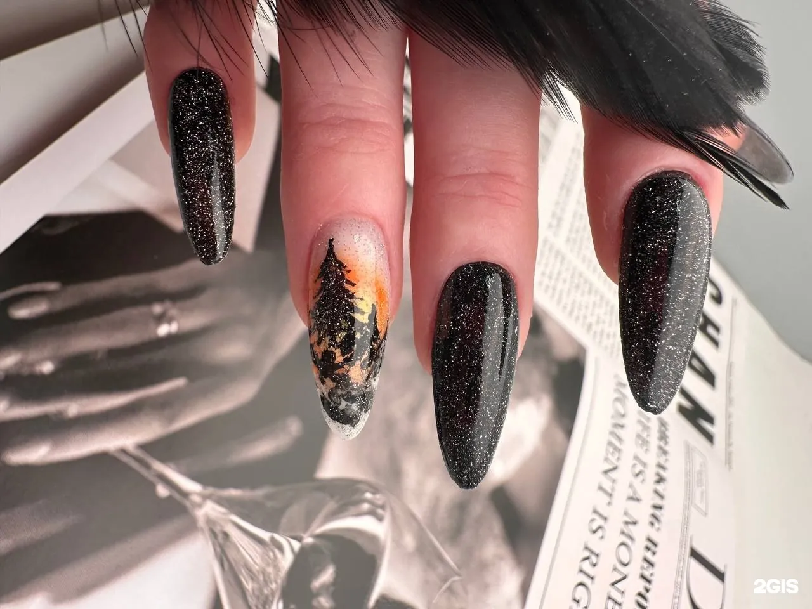

Студия маникюра на Лаврентьева, 11 · Казань
Маникюр и роспись тонкой кистью

На фото не наклейки, это работа, созданная тоненькой кисточкой!клиентка, отзыв в 2ГИС
Ведите по фото мышкой или пальцем: лупа покажет рисунок крупно. Фото работ из карточки 2ГИС.
«Юлия создаёт не просто маникюр, а пишет на ногтях картины»
клиентка, отзыв в 2ГИС
Японский и аппаратный маникюр, гель-лак, наращивание, мужской и детский маникюр. А рисунок Юлия пишет тонкой кистью прямо на ногте. Свободное время видно на сайте, запись в пару нажатий.
- 4,9 в 2ГИС · 26 оценок
- Лаврентьева, 11 · Ново-Савиновский район
- Пн–пт 9:00–20:00 · сб–вс 10:00–18:00
- По предварительной записи
Новым клиенткам
Первый визит к Юлии
Юлия недавно в Казани и открыла запись для новых клиенток. К ней ходят годами, так пишут в отзывах. На первом визите она посмотрит ногти и подберёт форму и цвет. А если ногти ослабли после другого мастера, приведёт их в порядок и подскажет, как восстановить пластину.
[ваше предложение на первый визит, если захотите]
Ближайшее свободное окошко
завтра 10:00 маникюр с гель-лакомДемонстрация: в готовом сайте окошки берутся из расписания Юлии.
Работы
Небольшая выставка
Работы Юлии по залам, как на выставке. Нажмите на фото, чтобы посмотреть крупно.
Фото из карточки студии в 2ГИС, названия работ примерные.
Услуги
Что делает Юлия
Нажмите на услугу, и она сразу окажется в записи.
Маникюр и уход
Покрытие и роспись
Наращивание
Услуги собраны по карточке 2ГИС и отзывам. Пришлёте прайс, поставлю цены и время.
Отзывы
К Юлии ходят годами
26 оценок и 20 отзывов в 2ГИС
«Она человек, к которому ходят годами и становятся приятелями… И кофе она варит тоже шикарный»
клиентка, отзыв в 2ГИС
Ходила к Юлии на протяжении нескольких лет и всегда оставалась довольна результатомНадежда, 2ГИС
…привела ногти в божеский вид, дала рекомендации по восстановлению пластиныСофья Пухова, японский маникюр после неудачного наращивания у другого мастера, 2ГИС
Решила мою проблему от предыдущего мастера. От коррекции до коррекции ноготки и покрытие в отличном состоянииЮлия Рачкина, 2ГИС
…хорошо смоделированная форма ногтей, качественная обработка кутикулы, большой выбор цветаМария Владимирова, 2ГИС
Покрытие продержалось 4 недели без единой отслойкиАлександра Иванова, 2ГИС
Очень нравится аккуратность, стерильность услугиЖанна Шик, 2ГИС
…не менее приятный мастер Юлия, идеальная работаВиктория Метс, 2ГИС
…даже угостили кофеИлона Попова, японский маникюр, 2ГИС
Отзывы настоящие, из карточки Юлии в 2ГИС, сокращены без изменения слов. Все отзывы в 2ГИС
Онлайн-запись
Запись без переписки
Услуга, день и время. Накануне придёт напоминание.
Вы записаны!
Откроется бот студии: нажмите «Старт», и накануне придёт напоминание. Здесь это демонстрация.
Напоминания в Telegram включены. Юлия видит ваш ник и может написать вам в Telegram.
Коротко о главном
Вопросы и ответы
Где находится студия маникюра Юлии Андреевой?
Казань, улица Академика Лаврентьева, 11, Ново-Савиновский район, 27-й квартал. Приём по предварительной записи.
Во сколько работает студия?
С понедельника по пятницу с 9:00 до 20:00, в субботу и воскресенье с 10:00 до 18:00, по предварительной записи.
Делаете роспись на ногтях?
Да. Юлия пишет рисунок тонкой кистью прямо на ногте: пейзажи, ели, мрамор с золотом. Клиентка в отзыве 2ГИС: «На фото не наклейки, это работа, созданная тоненькой кисточкой!»
Какие услуги есть в студии?
Японский и аппаратный маникюр, покрытие гель-лаком, роспись кистью, наращивание гелем и коррекция, мужской и детский маникюр.
Можно привести ногти в порядок после другого мастера?
Да. В отзывах 2ГИС клиентки пишут, что после неудачного наращивания Юлия сделала японский маникюр, привела ногти в порядок и дала рекомендации по восстановлению пластины.
Сколько стоит маникюр?
Маникюр с гель-лаком: [цена], японский маникюр: [цена].
Как оплатить?
Наличными или переводом с карты.
Как записаться?
Онлайн на этом сайте: выберите услугу, день и свободное время. Или позвоните: +7 902 912-19-67, напишите в Telegram @Yuliya21k, WhatsApp или Viber.
Юлия обучает мастеров маникюра?
Да, Юлия инструктор для мастеров маникюра. Ученицы работают на моделях под её руководством.
Как найти
Казань, улица Академика Лаврентьева, 11
27-й квартал, Ново-Савиновский район, 420133
[как найти вход: подъезд, этаж, домофон]
- Понедельник – пятницасегодня9:00–20:00
- Суббота и воскресеньесегодня10:00–18:00
По предварительной записи · наличные или перевод с карты
Маршрут в 2ГИСДля мастеров
Обучение у Юлии
Юлия ещё и инструктор для мастеров маникюра. Ученицы отрабатывают технику на моделях под её руководством: так пишет клиентка, которая приходила моделью.
[программа, длительность и цена обучения]
Для Юлии
Что сверим перед запуском
Черновик собран по открытым данным. Вот что здесь примерное или выведено косвенно: поправлю по вашим ответам.
- Цены и длительность услуг. В 2ГИС их нет, поэтому на сайте стоят заглушки [цена].
- Список услуг. Собран по карточке 2ГИС. «Коррекция наращивания» и «Покрытие с росписью кистью» добавлены по отзывам и фото: оставить ли их отдельными строками.
- «Юлия недавно в Казани». Написано по дате карточки в 2ГИС. Если это не так или не хочется об этом писать, уберу.
- Отзывы. Взяты из вашей карточки 2ГИС и сокращены без изменения слов. Город и фразы про прошлую студию (обстановка, место) убраны. Подтвердите, что их можно показывать так.
- Фото. Сейчас только работы из 2ГИС. Фото студии, входа и ваше фото поставлю, если пришлёте.
- Названия работ. «Лес на закате», «Ели и небо» и другие придуманы по фото, поменяю на ваши.
- Название студии. В 2ГИС она называется «Студия маникюра», на сайте подписано «Юлия Андреева, студия маникюра». Если есть своё название или логотип, поставлю их.
- Предложение новым клиенткам. Сейчас заглушка: впишу, если захотите что-то предложить на первый визит.
- Часы и выходные. По 2ГИС пн–пт 9:00–20:00, сб–вс 10:00–18:00, без выходных. Перерывы и выходные дни отмечу в записи словом.
- Как найти вход. Подъезд, этаж, домофон, парковка: в 2ГИС этого нет.
- Обучение мастеров. Программа, формат, цена и нужны ли модели для учениц.
- Связь. Телефон, Telegram @Yuliya21k, WhatsApp, Viber и ВКонтакте: какие оставить на сайте.
- Запись и напоминания. Сейчас это демонстрация: занятость придумана, заявка никуда не уходит. В готовой версии запись придёт вам в Telegram, а клиентке накануне напоминание.